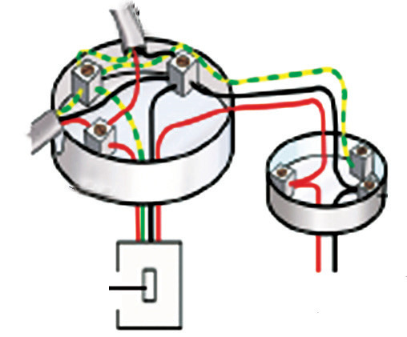
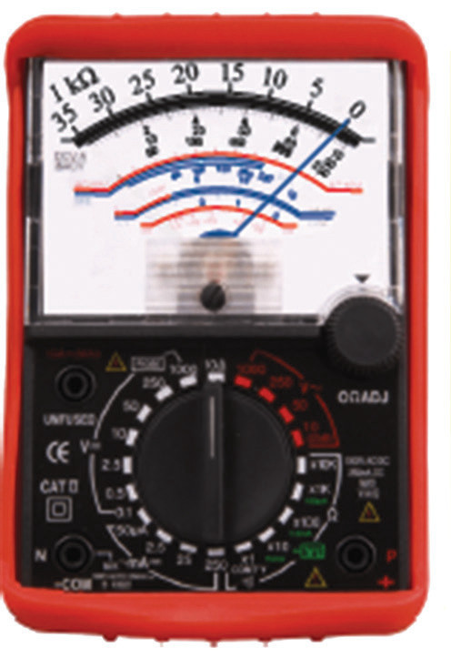
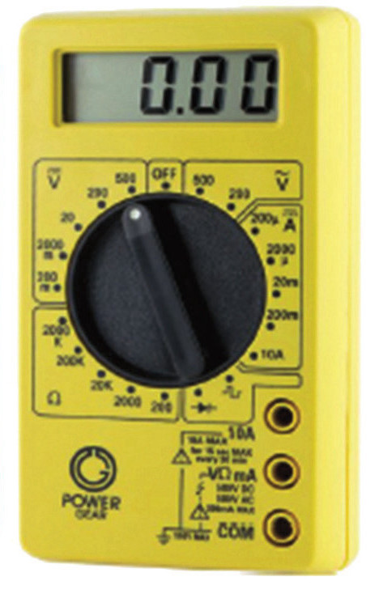

Task 2.4
1. Open up a three-pin plug and fix it to a cable and a fuse. Ask the teacher to check before you close it up.
2. Open the two-pin plug and fix it to the cables as instructed. Ask the teacher to check before you close it up.
Project 2.1
Aim: To demonstrate a ring and tree wiring on an electrical board
Materials: two switches, wire cutters, electrical board, bulb, red or brown, black or blue and yellow or green cables, each about 2 metres long
Procedure
1. Draw a schematic diagram of a ring in the circuit on a sheet of paper. Use the diagram to connect the circuit to the electrical board. Ask your teacher to check your connections before dismantling.
2. Draw a loop-in circuit to carry lamps. Use the diagram to connect the circuit to the electrical board. Ask your teacher to check your connection before dismantling it.
Checking electrical faults in domestic appliances
Identifying electrical faults in domestic appliances is essential for ensuring safety and optimal performance. Common issues like short circuits and faulty wiring can lead to malfunctions and pose hazards, making regular inspections and maintenance crucial. Two devices are useful when checking electrical appliance faults. These are the multimeter and the live mains lead indicator. Multimeters are tools used for measuring a variety of electrical variables. The most basic parameters measured are voltage and current (both a.c and d.c.). They also have a range switch so that precise readings can be taken. There are moving coils and digital multimeters. The moving-coil multimeters (analogue) (Figure 2.52 (a)) have some disadvantages as they involve various settings when in use. The digital multimeter (Figure 2.52 (b)), has no moving parts, thus, easy to use.

